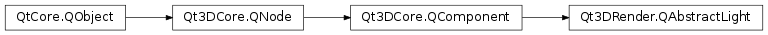

Qt3DRender.QAbstractLight¶
Inherited by: Qt3DRender.QSpotLight, Qt3DRender.QDirectionalLight, Qt3DRender.QPointLight
Synopsis¶
Slots¶
- def
setColor(color) - def
setIntensity(intensity)
Signals¶
- def
colorChanged(color) - def
intensityChanged(intensity)
Detailed Description¶
Encapsulate aQAbstractLightobject in a Qt 3D scene.
-
PySide2.Qt3DRender.Qt3DRender.QAbstractLight.Type¶ Identifies the particular type of light.
Constant Description Qt3DRender.QAbstractLight.PointLight Qt3DRender.QAbstractLight.DirectionalLight Qt3DRender.QAbstractLight.SpotLight
-
PySide2.Qt3DRender.Qt3DRender.QAbstractLight.color()¶ Return type: PySide2.QtGui.QColorSee also
PySide2.Qt3DRender.Qt3DRender::QAbstractLight.setColor()
-
PySide2.Qt3DRender.Qt3DRender.QAbstractLight.colorChanged(color)¶ Parameters: color – PySide2.QtGui.QColor
-
PySide2.Qt3DRender.Qt3DRender.QAbstractLight.intensity()¶ Return type: PySide2.QtCore.floatSee also
PySide2.Qt3DRender.Qt3DRender::QAbstractLight.setIntensity()
-
PySide2.Qt3DRender.Qt3DRender.QAbstractLight.intensityChanged(intensity)¶ Parameters: intensity – PySide2.QtCore.float
-
PySide2.Qt3DRender.Qt3DRender.QAbstractLight.setColor(color)¶ Parameters: color – PySide2.QtGui.QColorSee also
PySide2.Qt3DRender.Qt3DRender::QAbstractLight.color()
-
PySide2.Qt3DRender.Qt3DRender.QAbstractLight.setIntensity(intensity)¶ Parameters: intensity – PySide2.QtCore.floatSee also
PySide2.Qt3DRender.Qt3DRender::QAbstractLight.intensity()
-
PySide2.Qt3DRender.Qt3DRender.QAbstractLight.type()¶ Return type: PySide2.Qt3DRender.Qt3DRender::QAbstractLight.TypeHolds the current
QAbstractLighttype.
© 2018 The Qt Company Ltd. Documentation contributions included herein are the copyrights of their respective owners. The documentation provided herein is licensed under the terms of the GNU Free Documentation License version 1.3 as published by the Free Software Foundation. Qt and respective logos are trademarks of The Qt Company Ltd. in Finland and/or other countries worldwide. All other trademarks are property of their respective owners.